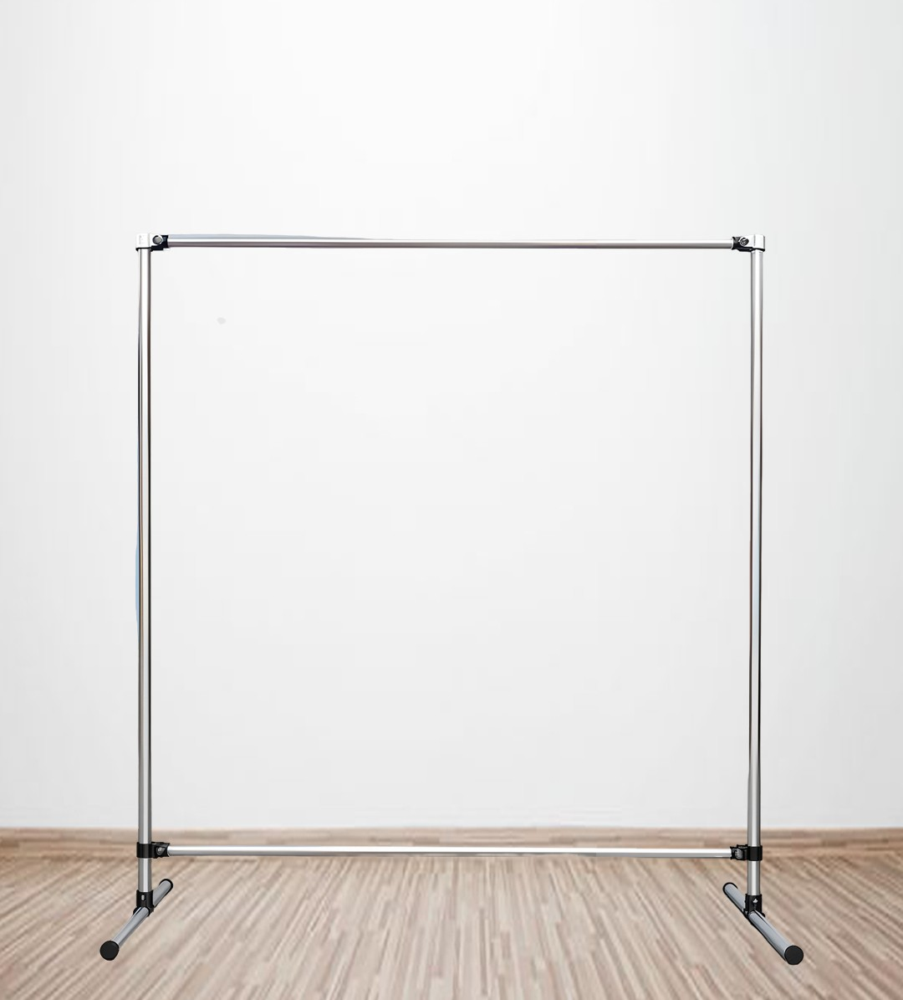
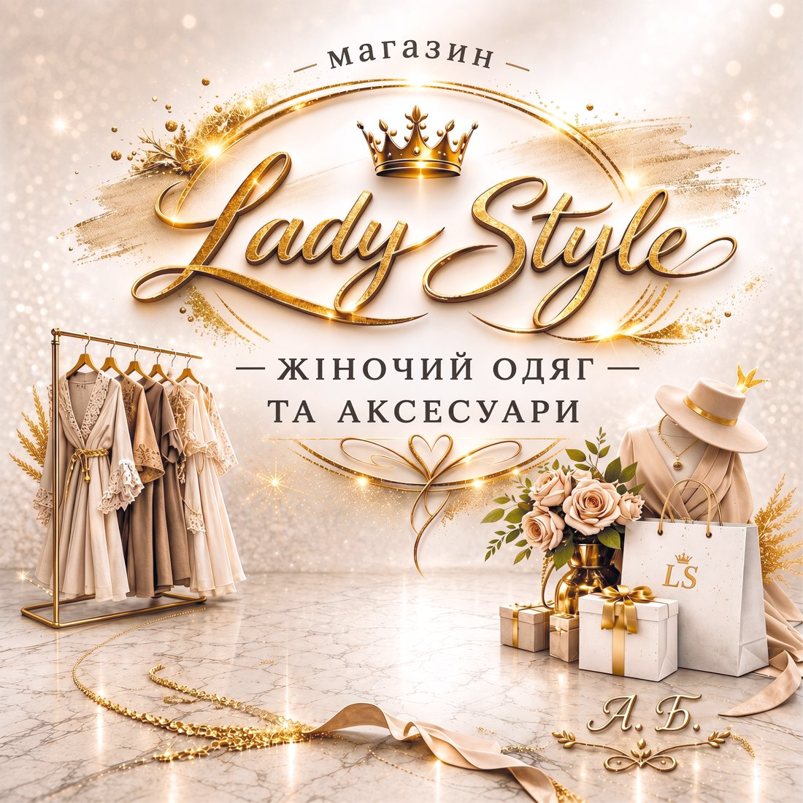
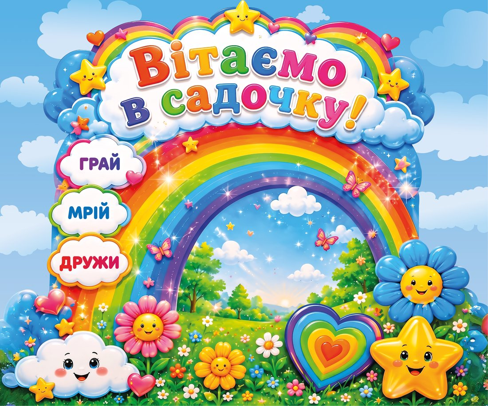
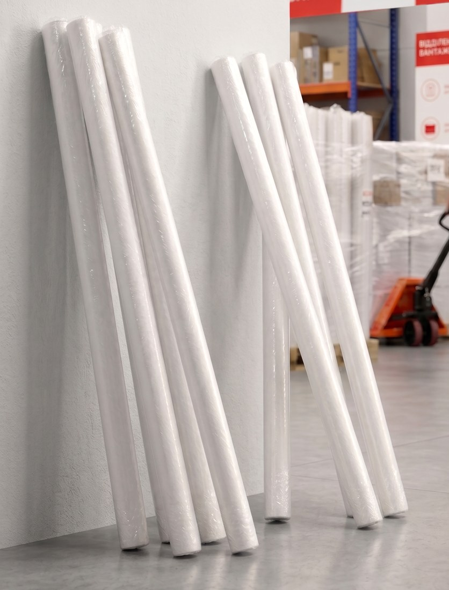

Яскраві та чіткі вивіски для закладу, подій, акцій чи зовнішньої реклами. Міцний литий банер — не боїться дощу та вітру. Готові вироби зі встановленими металевими кільцями для легкого монтажу. Виготовлення рекламних банерів за вашими індивідуальними розмірами.
Зручна доставка Новою Поштою по Україні та Європі.

Надрукуємо готовий файл, фотографію або індивідуальний макет. Перевіримо ваш макет на відповідність технічним вимогам перед друком.
Замовити →
Банер пересилаємо скрученим у рулон на твердій основі — так він не мнеться і не ушкоджується в дорозі.
Через довжину рулону посилка не завжди проходить у звичайне поштове відділення (там приймають вантажі не довші за 120 см). Тому при оформленні обирайте вантажне відділення або замовляйте кур'єрську доставку на адресу.
Доставляємо і в Україну, і в Європу. Міста з вантажними відділеннями Нової Пошти в Європі можна перевірити за посиланням →
